Agenda
- Introduction
- What is a microprocessor?
- What's so great about the Arduino?
- History of the Arduino
- Overview of the Arduino hardware
- Overview of the Arduino IDE
- Overview of Arduino programming
- From Prototype to Gadget
- Our Project: The Chiptune Player
What is a Microprocessor?
There are 5 basic functions units of a computer system:
- Control Unit (CU)
- Arithmetic-Logical-Unit (ALU)
- Memory (ROM, RAM, Registers)
- Input
- Output
What is a Microprocessor?
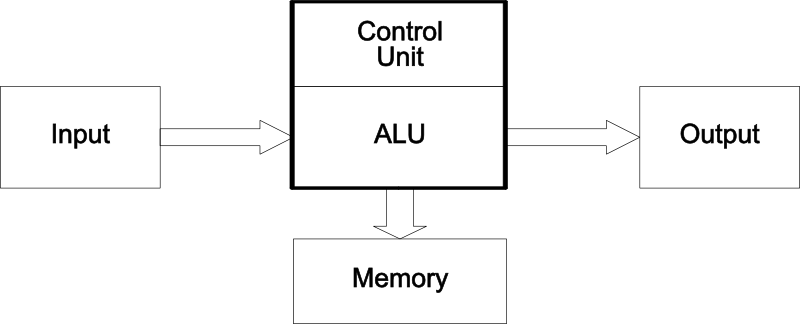
What is a Microprocessor?
- The classical definition of a microprocessor is the combination
of the Control Unit, Arithmetical-Logical-Unit and Registers in
a single package, a.k.a. CPU
- Modern microprocessors also integrate input and output ports
and on-chip memory (cache, EEPROM, flash, RAM)
- The Arduino is controlled by a microprocessor called the AVR
General Microprocessor
Architecture (8080, 6502)
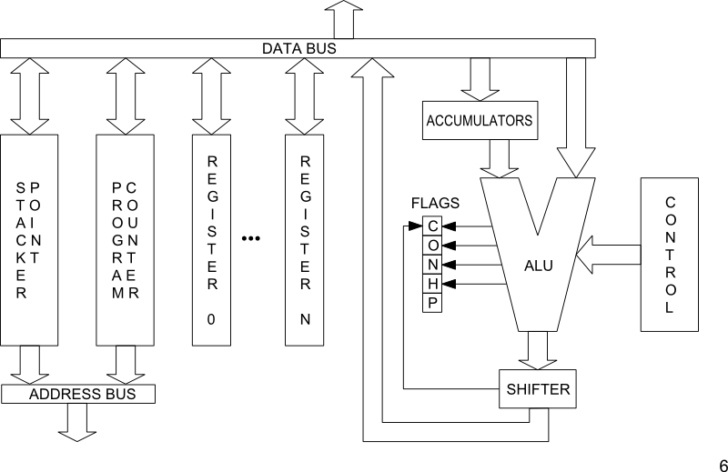
Atmel AVR Architecture
© Atmel Corporation
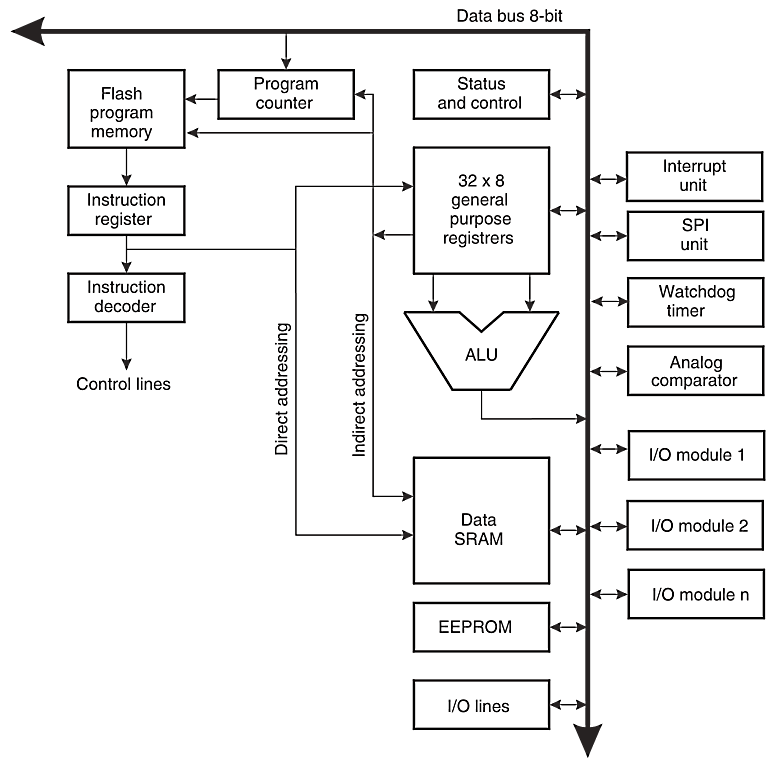
What's so great about the Arduino?
Arduino isn't just hardware, it's a complete development
environment:
- An open-source electronics prototyping platform based on
inexpensive hardware
- A free, easy to use software integrated development
environment (IDE)
- A familiar programming language based on Processing
and C/C++
- An active, diverse, inclusive development community
History of the Arduino
- Developed by Massimo Banzi and David Cuartielles at the
Interaction Design Institute Ivrea, Italy in 2005
- Designed to be an inexpensive prototyping system for
student interactive design projects
- Built upon the Wiring Platform, by Hernando Barragán,
based on the AVR and Processing
- See the full length documentary video at
http://vimeo.com/18539129
Arduino Hardware Overview
- Based on the Atmel Atmega168/328[P], an 8-bit AVR running on
5V at 16MHz
- Programmed with a bootloader to bootstrap loading programs
from USB
- Microprocessor pins are broken out to headers in a standard
configuration
- Additional “shield” boards can be “stacked” on the headers for
extended functionality
Arduino UNO R3 (~$30)
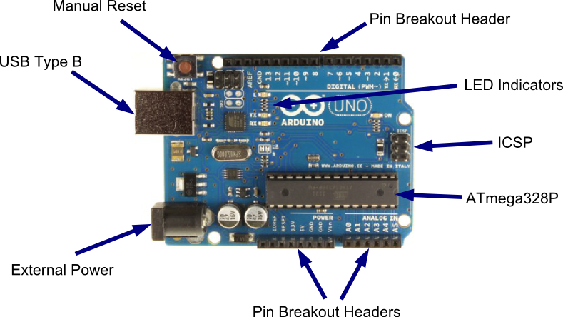
Arduino IDE Overview
- The Arduino IDE (Integrated Development Environment) is all you
need to develop programs for the Arduino
- Written in Java, based on the Wiring IDE
- Runs on Windows, OSX and Linux
- Automates the entire AVR development toolchain: editor,
compiler/linker (avrgcc), uploader (avrdude), terminal emulator,
and more
Arduino Programming Overview
- The Arduino programming language is actually C++, written on
top of the Arduino Core
- A programmer doesn't have to know how to write C++ programs,
only the conventions for writing Arduino programs
- The Arduino IDE takes care of compiling, linking and uploading
the program, so you don't have to know how to use any of
those tools
What is the Arduino Core?
- The Arduino Core provides the main entry function, data types,
and high level functions to program the AVR
- It is a library that abstracts low level microprocessor
programming concepts into high level function calls
- It is based on Processing, a language designed to teach
programming in a visual context to non-programmers
What is the Arduino Core?
- The Arduino Core assigns a set of standard numbers to the
generic I/O pins of the microprocessor for use in programs
- The Arduino Core is automatically included in and linked to
your Arduino programs
- You can extend the Arduino Core with regular C and C++
libraries
What is the Arduino Core?
A basic AVR program to blink a LED (in C):
// http://hackaday.com/2010/10/25/avr-programming-02-the-hardware/
#include <avr/io.h>
#include <avr/interrupt.h>
int main(void) {
//Setup the clock
cli(); //Disable global interrupts
TCCR1B |= 1<<CS11 | 1<<CS10; //Divide by 64
OCR1A = 15624; //Count 15624 cycles for 1 second interrupt
TCCR1B |= 1<<WGM12; //Put Timer/Counter1 in CTC mode
TIMSK1 |= 1<<OCIE1A; //enable timer compare interrupt
sei(); //Enable global interrupts
DDRD |= (1<<0); //Set PortD Pin0 as an output
PORTD |= (1<<0); //Set PortD Pin0 high to turn on LED
while(1) { } //Loop forever, interrupts do the rest
}
//Interrupt Service Routine
ISR(TIMER1_COMPA_vect) {
PORTD ^= (1<<0); //Use xor to toggle the LED
}
What is the Arduino Core?
A basic Arduino program to blink a LED:
void setup() {
// initialize the digital pin as an output.
// Pin 13 has an LED connected on most Arduino boards:
pinMode(13, OUTPUT);
}
void loop() {
digitalWrite(13, HIGH); // set the LED on
delay(1000); // wait for a second
digitalWrite(13, LOW); // set the LED off
delay(1000); // wait for a second
}
Advantages of the Arduino Core
- You don't have to write boilerplate code usually required for
microprocessor programming
- Interaction with microprocessor functions is done through
high level function calls rather than looking up bits to set in
registers from a data sheet
- Code is readable and understandable by humans, even by
non-programmers
From Prototype to Gadget
- Create a sketch & circuit for the
Arduino.
- Pick a compatible part (AVR) with the
correct number of input/output pins and size, voltage, clock, etc.
requirements.
- Modify sketch and input/output
hardware to match capabilities of microprocessor.
- Test, refine, test...
and test and test!
- Design your final board —
pre-printed breadboard, etch your own, board service, or
deadbug!
From Prototype to Gadget
Create a sketch & circuit for the Arduino
From Prototype to Gadget
Pick a compatible part (AVR)
- The chiptune player needs 2 output pins for sound and 1 for
arpeggio control
- Need at least 4k of flash (for program), at least 256 bytes of
RAM (main memory)
- The ATtinyx5 series has 5 input/output pins, can run up to 20MHz
- We picked the ATtiny85 (8k flash, 512 bytes RAM, internal 8MHz clock)
From Prototype to Gadget
Modify Sketch and Hardare for Microprocessor
- Internal timers work differently, so a custom timer interrupt
had to be used
- Clock is slower (8MHz vs. 16MHz), so tone generation and note
timing functions had to be modified
- Desgn goals vs. compromises:
- E.g., using the internal clock minimizes parts, but speed
will slightly differ from part to part
From Prototype to Gadget
Test, refine, test... (ad nauseam)
- Always test your design on a breadboard — use real parts!
- If using SMD parts, use breakout boards. In the long run it will
save you time and $$
- Don't buy just one set of parts for prototype/testing, have 3-5
sets on hand, more if a part is easily lost, broken, burned,
bricked...
- It's OK to go back to the drawing board if things aren't working
out
- Always expect the unexpected!
From Prototype to Gadget
Design Your Final Board
- Keep in mind issues like utility, size, longevity
- Ugly but functional is better than pretty but disposable
- Design services are nice and getting cheaper, but pre-printed
breadboards are cheap and available
- Don't be afraid to try something different!
Our Project: A Chiptune Player
- Plays synthesized 8-bit music
- Prototyped on a standard Arduino Uno
- Built to spec using an ATtiny85
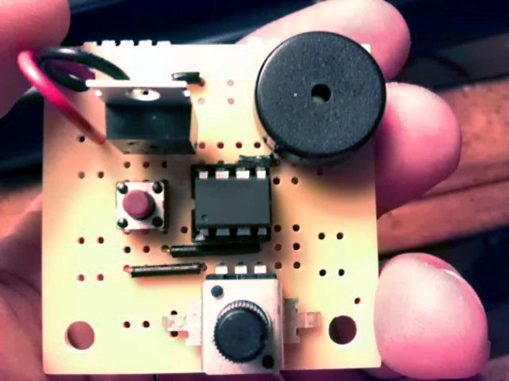
Chiptune Player Schematic
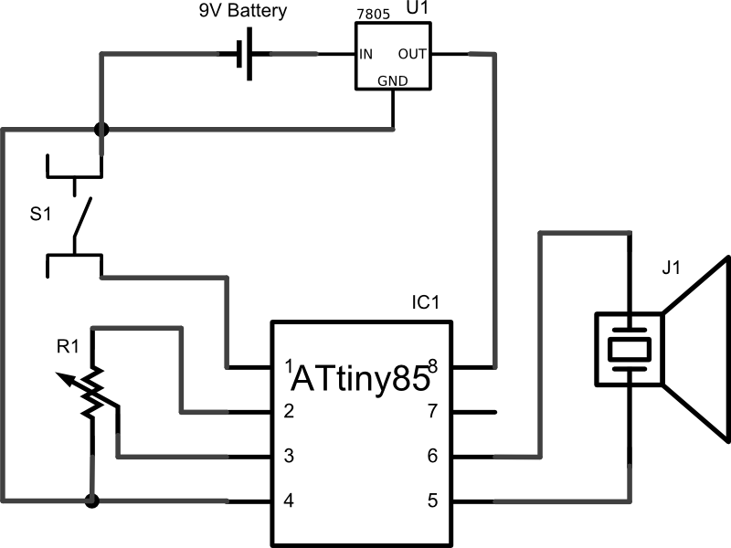
The Microprocessor
Atmel ATtiny85 AVR
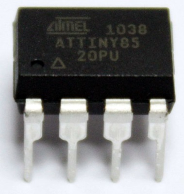
The Build
Step 1: The (Almost) Empty Board
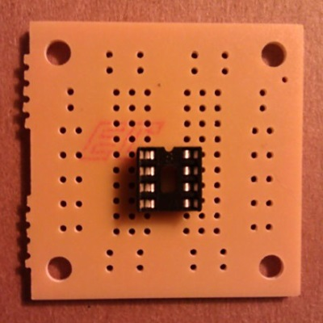
The Build
Step 2: The Jumpers (Wires)
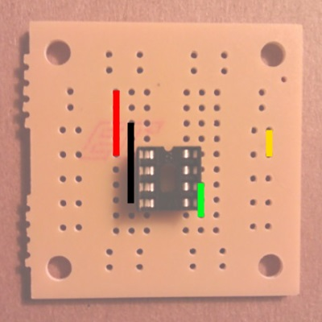
The Build
Step 3: The Piezo
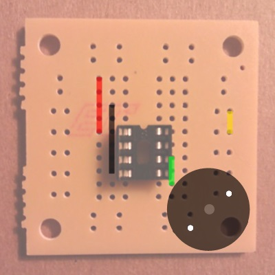
The Build
Step 4: The Push Button
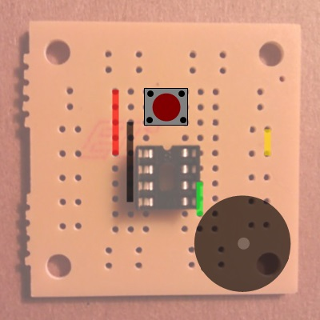
The Build
Step 5: The Potentiometer
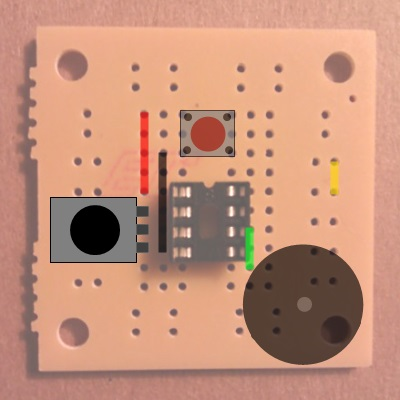
The Build
Step 6: The Regulator
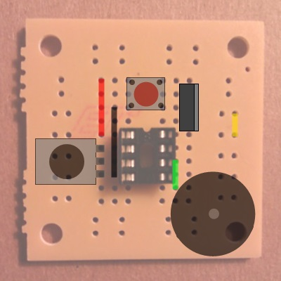
The Build
Step 7: The Battery Snap
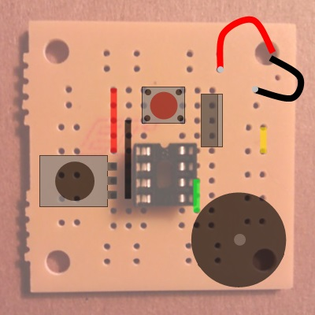
The Build
Some helpful hints:
- Bend wire and part leads out to hold them in place.
- Solder lower profile parts first, bigger parts last.
- Use clamps, clothespins or even gravity to help hold the parts
close to the board before soldering.
- Run the battery snap leads from the bottom of the board up
through the corner hole and back down on the board again. This
will help relieve tension on the solder joint.
- Have fun!